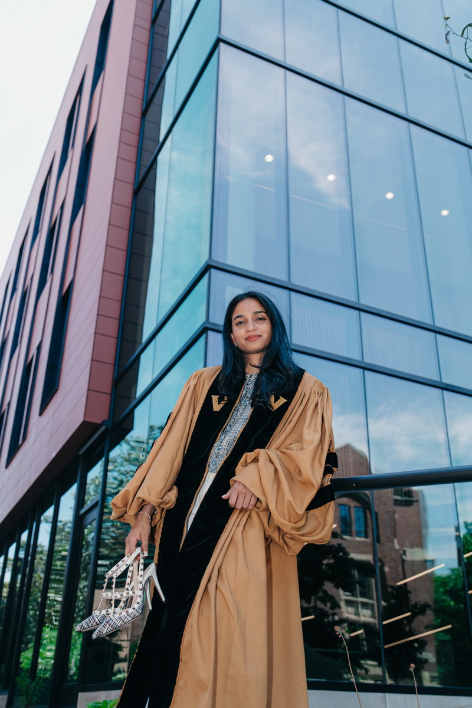

I am an AI/ML Research Scientist at Bioscope AI, where I build a precision longevity platform integrating multi-omics data with neuroimaging. I recently graduated with a Ph.D. in Computer Science from Vanderbilt University, advised by Dr. Bennett A. Landman in the MASI Lab. My dissertation, "Modeling and Correcting Scanner Bias Using Physics- and AI-Driven Methods for Reliable Neuroimaging Analysis," developed physics-informed neural networks that eliminate 10–30% scanner-induced errors in quantitative brain imaging.
During my Ph.D., I interned at the U.S. FDA (CDRH/OSEL) where I developed BEHYPE, a framework for detecting bias in AI-based medical devices. My corrections enabled two landmark studies: the first normative white matter brain charts (Nature, 2026) and the largest white matter asymmetry study ever conducted (Human Brain Mapping, 2026).
Research Interests: Physics-Informed Deep Learning, Diffusion MRI, Bias Field Correction, Gradient Nonlinearity Correction, AI Fairness & Trustworthiness, Medical Device Regulation, Clinical AI Infrastructure, LLMs in Healthcare, Neuroimaging, Brain Age Estimation, Multi-Omics Data Fusion
Selected Journal Papers
Normative White Matter Brain Charts
Nature, 2026 · 26 citations
First comprehensive normative white matter brain charts across 42 cohorts worldwide
White Matter Asymmetry Across the Human Brain
Human Brain Mapping, 2026
Largest study of white matter asymmetry ever conducted · 26,000+ scans
Susceptibility-Induced Distortion Correction Without Reverse Phase-Encoding
PLoS ONE, 2020 · 153 citations
Most-cited work
MASiVar: Multi-Site, Multi-Scanner Acquisition Variability Study
Magnetic Resonance in Medicine, 2021 · 61 citations
HIPAA-Compliant Clinical AI Platform at Vanderbilt University Medical Center
Journal of Digital Imaging, 2022 · 16 citations
First Author · 6 AI tools across 7 departments
XNAT Platform with BIDS Export Functionality
Journal of Digital Imaging, 2022 · 7 citations
Replicated at Brown, Oxford, and UCL
Conference Papers
BEHYPE: Bias Evaluation Using Hyperdimensional Computing for AI-Based Medical Devices
SPIE Medical Imaging, 2025
Developed at U.S. FDA CDRH
Mapping the Impact of Nonlinear Gradient Fields on dMRI Tensor Estimation
SPIE Medical Imaging, 2022
Robert F. Wagner Best Student Paper Finalist · Top ~1.5% of 1,000+ papers
Preprints
Bioscope AI
Vanderbilt University — MASI Lab (PI: Dr. Bennett A. Landman)
U.S. Food & Drug Administration — CDRH/OSEL
Vanderbilt University
Brookhaven National Laboratory
Stony Brook University
"Diverging Representations in AI Models for Improved Transparency"
FDA Scientific Research Day — August 2024
"Bias Evaluation in AI Models"
FDA AI/ML Program — 2024
"Efficient Approximate Signal Reconstruction for Correction of Gradient Nonlinearities"
VUIIS Retreat — October 2023
"Deep Learning for Medical Images"
Dr. N.G.P. Institute of Technology, India — 2022
"Mapping the Impact of Nonlinear Gradient Fields on dMRI Tensor Estimation"
SPIE Medical Imaging — February 2022

I grew up in Coimbatore, a city in southern India known for its engineering colleges and its proximity to the Western Ghats. From there, I've followed curiosity across three continents — studying in Australia on a full scholarship, researching at Brookhaven National Laboratory, and completing my Ph.D. at Vanderbilt in Nashville.
When I'm not debugging a neural network or reading a paper, you'll find me training for a marathon, on a yoga mat, or exploring a new city with a good hot chocolate in hand. I believe deeply that the curiosity which drives good science is the same curiosity that makes life interesting — and I try to bring that energy to everything I do.